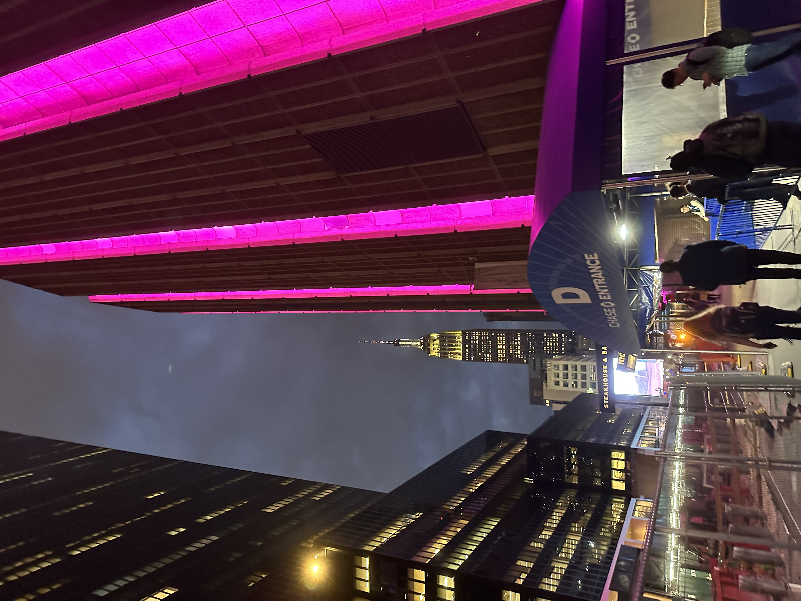
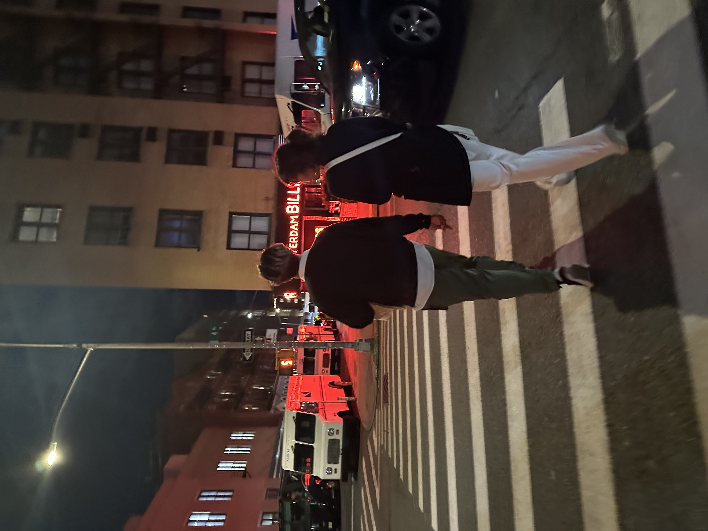

Kelly Wu
Photojournalism at NJIT (COM 337)


A Day in the Life
Write a brief description here. You can change this link it make it go directly to your slideshow (which you should paste into the same folder).

Hobby Essay
Write a brief description here. You can change this link it make it go directly to your Hobby Essay in Word or PDF (which you should paste into the same folder).

World Problems
Write a brief description here. You can change this link it make it go directly to your World Problems Essay (in the same folder).